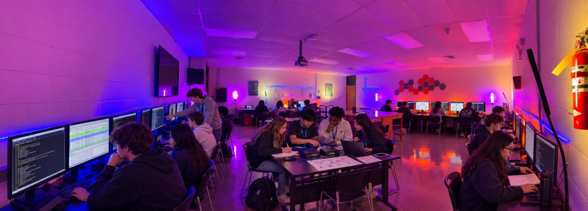
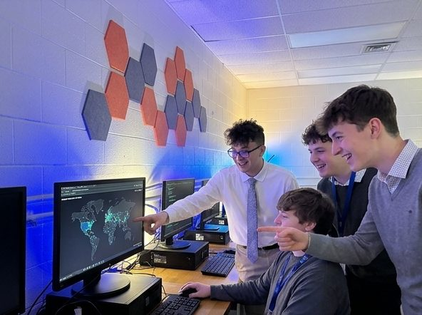
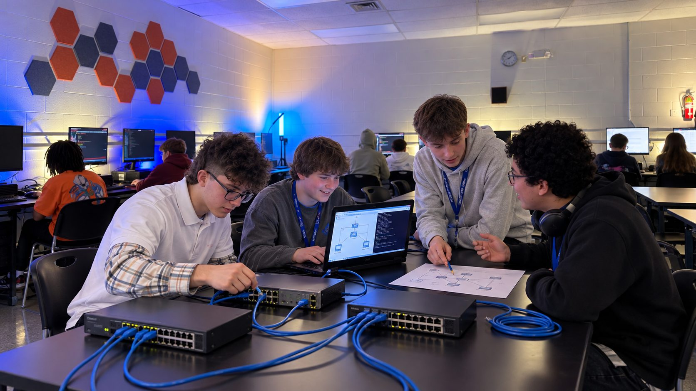
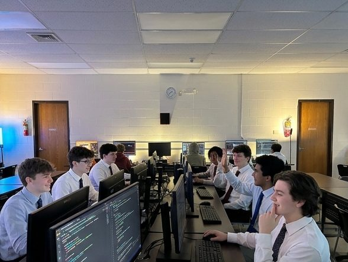
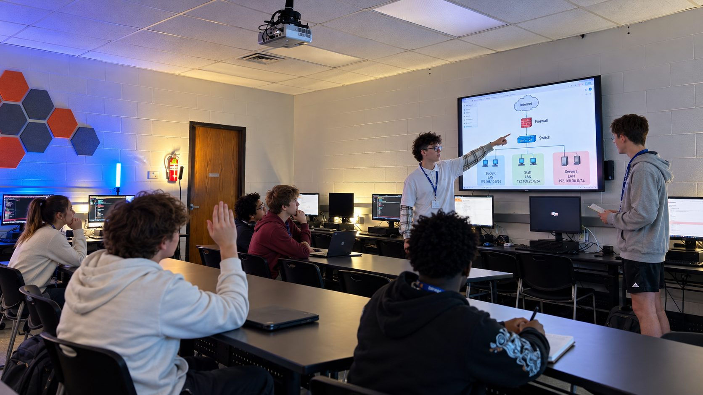
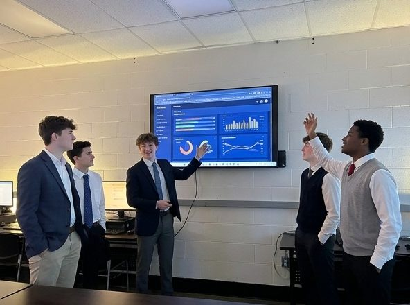
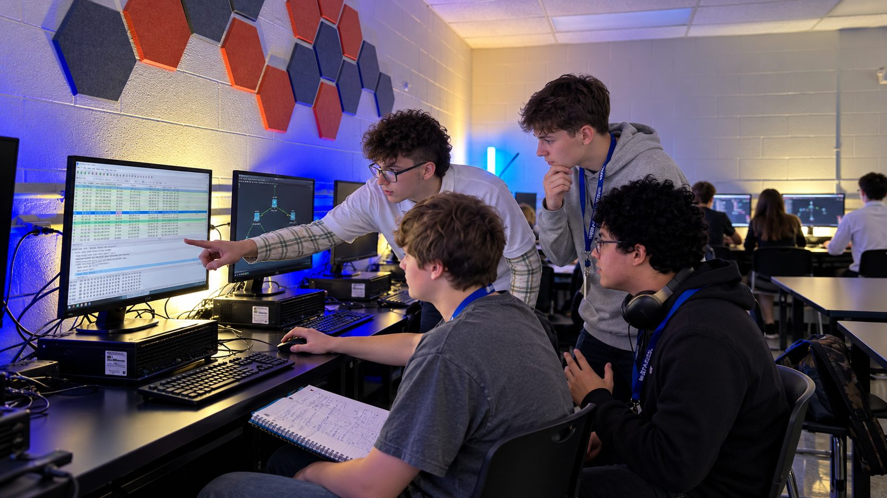

A place to build a future in technology
Real equipment. Working code. Hands-on learning.
Median annual wage, May 2025, U.S. Bureau of Labor Statistics. Medians cover workers at every experience level and are not starting pay. These roles typically follow college or technical training, which certification and dual credit help students begin in high school.




| Opportunity | Year 1 | Year 2 |
|---|---|---|
| Certification preparation | CompTIA Security+ | CompTIA Network+ |
| Optional AP pathway | AP Cybersecurity | AP Networking* |
| Dual-credit opportunities | Kankakee Community College and Prairie State College | Kankakee Community College and Prairie State College |

